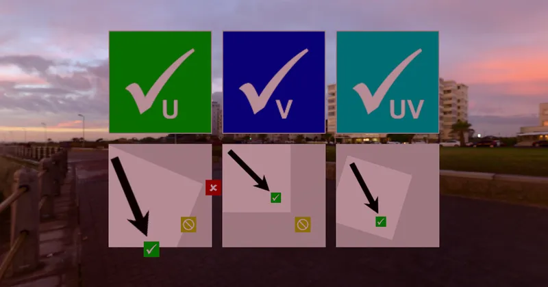

GLTF > GLTF Extensions > KHR_texture_transform
Texture Transform Test - RedGPU WebGPU Example
Tests UV scaling, rotation, and offset via KHR_texture_transform.
KHR_texture_transform 기반의 UV 스케일·회전·이동을 검증합니다.

GLTF > GLTF Extensions > KHR_texture_transform
Tests UV scaling, rotation, and offset via KHR_texture_transform.
KHR_texture_transform 기반의 UV 스케일·회전·이동을 검증합니다.
